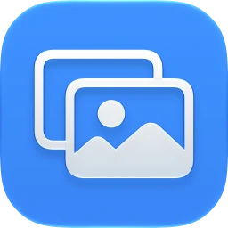
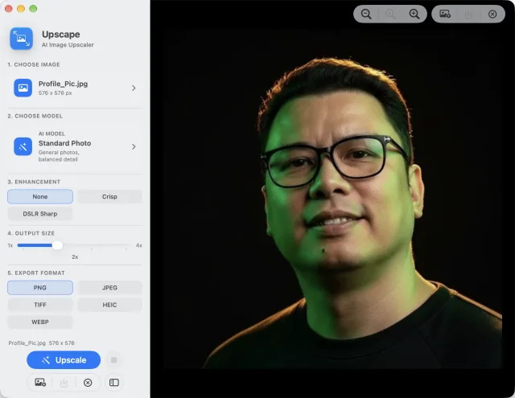
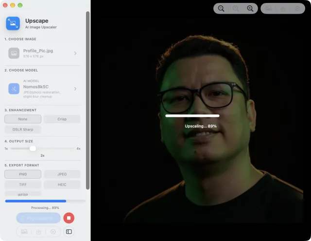
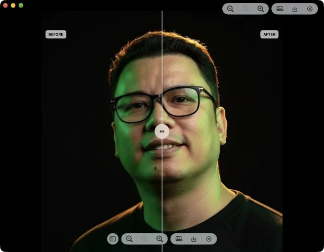
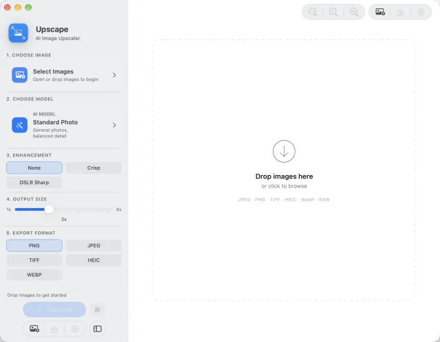

Sharper images. Made on your Mac.
Private AI upscaling up to 4x. Nothing is ever uploaded.
Requires macOS · No account




And so much more.
Read the privacy policy for Upscape ›
Standard Photo
Your go-to for everyday images, product shots and screenshots.
Illustration
Anime, comics and flat artwork, with crisp edges and clean colour.
UltraSharp
Maximum edge clarity for architecture, landscapes and drawings.
NMKD Siax CX
Smooth gradients, clean lines and natural skin on portraits.
Nomos 8K
Fine texture and punchy micro-detail for people and digital art.
General v3
Controlled, natural results with fewer halos on real-world photos.
Made for every kind of image.
Upscape is an AI image upscaler for Mac. It increases image resolution and enhances detail using local Core ML models.
No. Upscape processes images locally on your Mac. Your files are not uploaded for image processing.
Common image formats including JPEG, PNG, TIFF, HEIC, WebP, RAW, and other image files supported by macOS.
Upscape uses 4x AI upscaling models and can export at different output sizes depending on your chosen scale.
Standard Photo for most images, Illustration for anime or artwork, UltraSharp for architecture and landscapes, NMKD Siax CX for portraits and smooth gradients, Nomos 8K for punchy micro-detail and texture, and General v3 for real-world photos with fewer halos and artifacts.
Yes. Once installed with its models, Upscape can process images locally without an internet connection.
It can improve low-resolution and compressed images, but it cannot fully recover detail that was never present. It works best on images that are small, compressed, or pixelated rather than severely out of focus.
Yes. Upscape supports batch upscaling so you can process multiple files in one run.
PNG, JPEG, TIFF, HEIC, and WebP.
Upscape is made by totoantonio.
“I had a folder of old family photos that were too small to print. Upscape made them usable without uploading anything, and the before-and-after slider made it easy to tell which model looked best.”
— Martin L., iMac User
“The fact that it runs locally on my Mac is the big win. I can upscale images without handing them to a website, and the results still look strong.”
— Rebecca D., Photographer
“I like how simple it feels. Pick a model, check the comparison, export. No account, no drama, and the quality jump is obvious.”
— Sam W., Content Creator
Sharper images, made privately on your Mac.
Requires macOS · Works offline